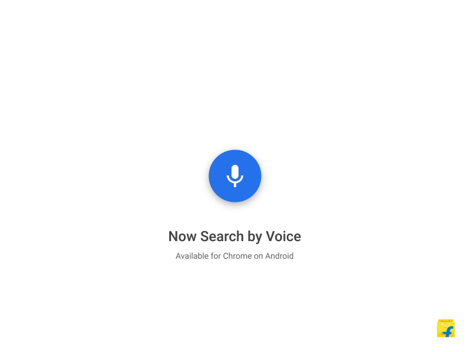

Flipkart was fast to introduce their PWA aka Progressive Web App and now they have introduced Voice Search in their web app. Now you have to just tap the voice icon and start speaking what you want. It makes the whole process fast and easier. Instead of typing some query words you now just have to say those words.
Flipkart was fast to introduce their PWA aka Progressive Web App and now they have introduced Voice Search in their web app. Now you have to just tap the voice icon and start speaking what you want. It makes the whole process fast and easier. Instead of typing some query words you now just have to say those words.
Duis iaculis venenatis eleifend. Integer tristique pharetra enim at ullamcorper. Nulla porta vel dolor nec molestie. Duis egestas, tortor et lacinia blandit, dolor felis rhoncus elit, eu finibus justo lectus nec eros. Curabitur et hendrerit eros, at gravida tortor. Curabitur pretium nunc tempus nisl mollis, sed porttitor orci consectetur. Sed at metus ut magna aliquam laoreet. Donec ut tellus sit amet dui fermentum blandit. Suspendisse faucibus placerat neque et auctor. Duis quis quam id nulla pellentesque elementum eget eu felis. Quisque ipsum libero, bibendum a molestie a, consequat at sapien. Nam eget lectus quis tellus consectetur luctus eget rutrum quam. Vestibulum id malesuada sapien. Curabitur neque arcu, gravida a mi non, convallis gravida arcu. Vestibulum quis congue enim, ut malesuada magna.
Cras sed libero fermentum, porta quam nec, faucibus tellus. Pellentesque vehicula tincidunt pulvinar. Vestibulum quis neque vitae lectus placerat porta. In eu purus nibh. Fusce a tortor ex. Fusce viverra tellus vel erat convallis porta. Nulla facilisi. Fusce posuere sollicitudin consectetur. Nunc mollis dolor quis dolor sagittis dapibus. Duis a arcu in ex efficitur pretium eget at nisl. Maecenas fermentum porttitor ante, id consectetur mi. Phasellus a diam egestas, efficitur augue at, ullamcorper tortor.
Nam nulla dui, dignissim non interdum nec, sollicitudin sit amet nibh. Quisque a felis nulla. Phasellus efficitur neque et gravida semper. Nullam placerat diam et felis tristique consequat. Duis tempor dolor at sollicitudin placerat. Duis eleifend, turpis ac blandit vestibulum, arcu orci condimentum justo, id facilisis lacus sapien et enim. Nunc vulputate interdum enim, sit amet feugiat tellus auctor nec. Fusce id quam nec leo interdum fringilla eu vel neque. Donec consequat vulputate ante.
Aliquam erat volutpat. Sed mauris lacus, ornare vel orci ut, gravida mollis metus. Etiam feugiat blandit auctor. Proin vulputate a eros vitae interdum. Praesent urna lacus, ornare et luctus tristique, gravida vehicula mi. Nunc suscipit interdum nisi. Phasellus vitae dictum nunc. Cras eleifend rhoncus metus.